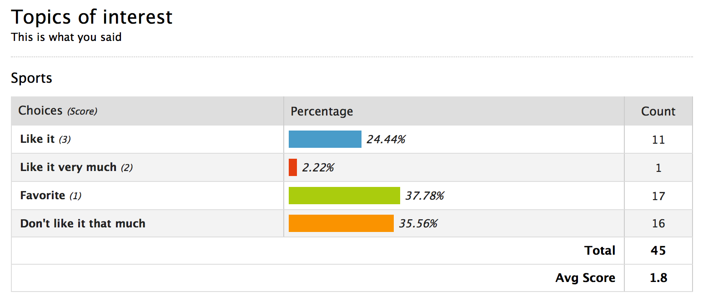
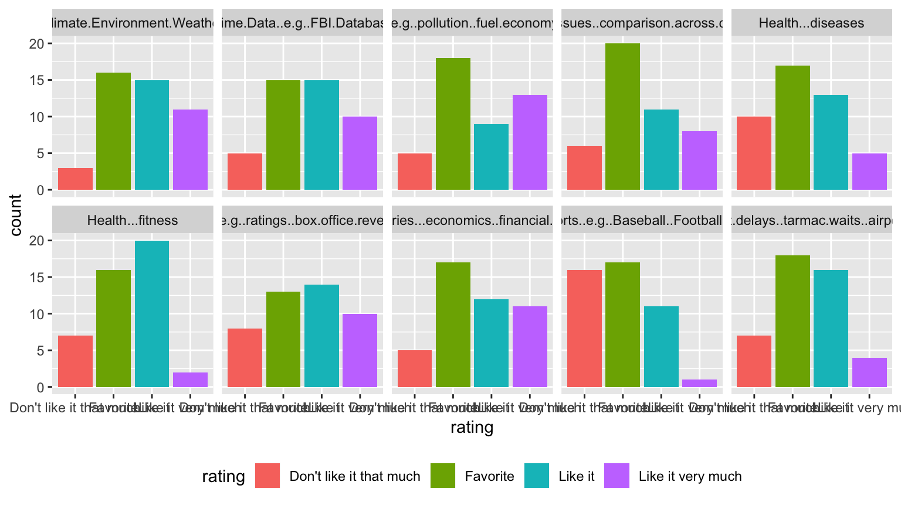
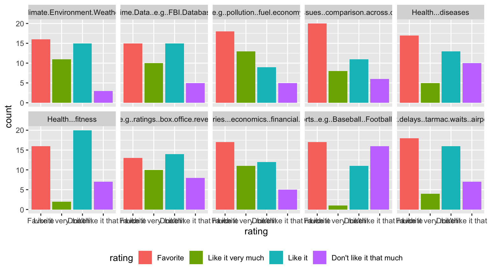
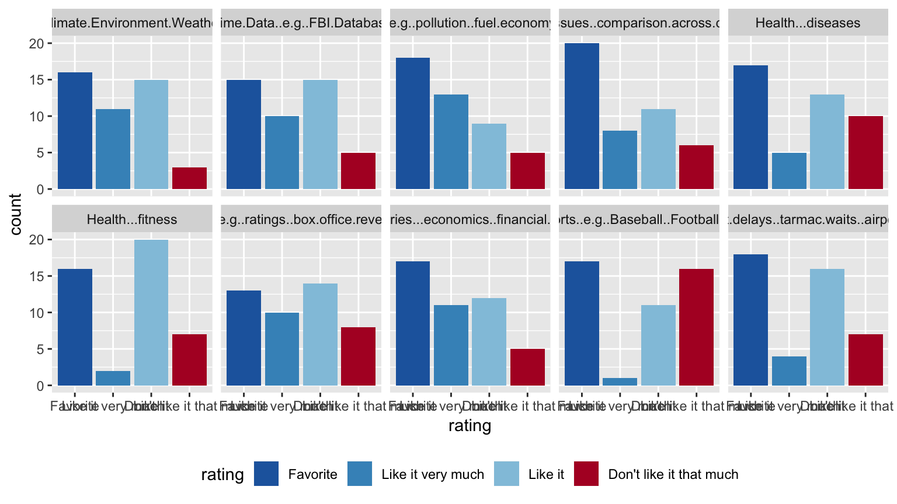
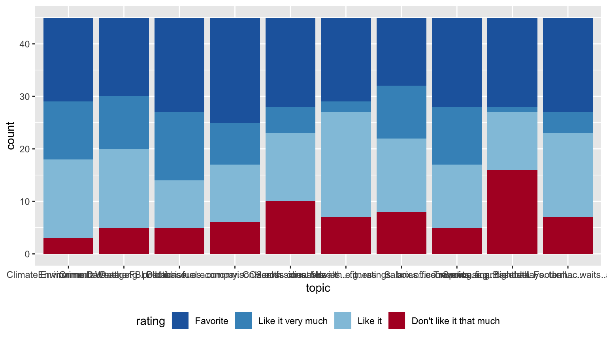
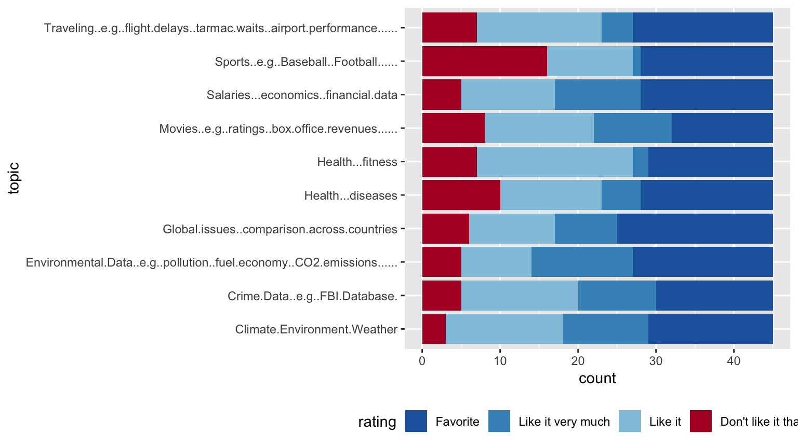
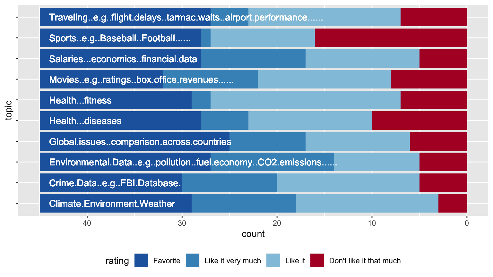
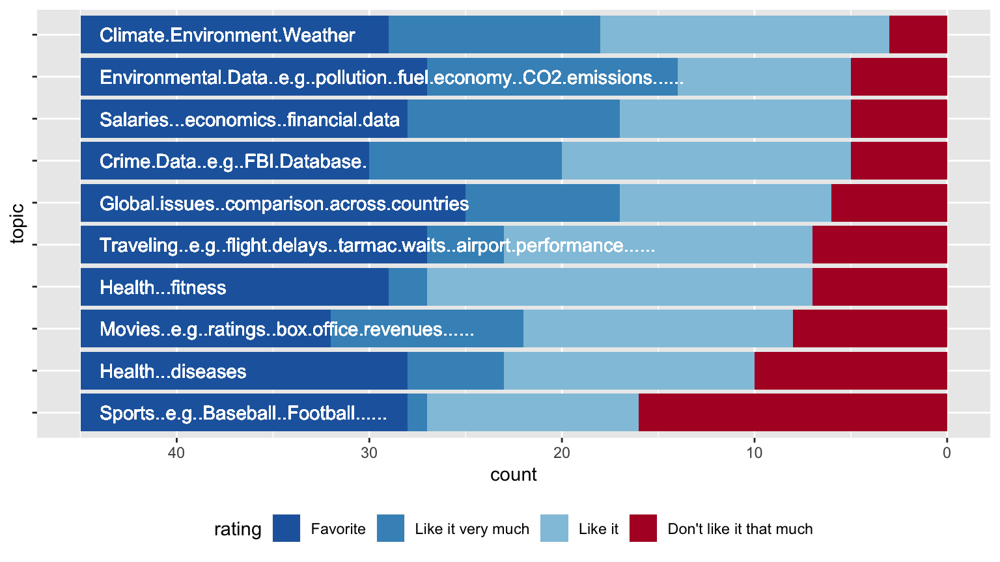

Heike Hofmann

… there’s nine more of these charts … which topic is the best?
… this is what the raw data looks like …
## Sports..e.g..Baseball..Football...... Crime.Data..e.g..FBI.Database.
## 1 Favorite Like it
## 2 Don't like it that much Like it very much
## 3 Favorite Favorite
## 4 Favorite Like it
## 5 Don't like it that much Like it
## 6 Favorite Like it
## Health...fitness Health...diseases
## 1 Like it very much Don't like it that much
## 2 Like it Favorite
## 3 Favorite Favorite
## 4 Like it Like it
## 5 Like it Like it
## 6 Like it Like it very much
## Movies..e.g..ratings..box.office.revenues......
## 1 Favorite
## 2 Like it very much
## 3 Favorite
## 4 Don't like it that much
## 5 Favorite
## 6 Don't like it that much
## Climate.Environment.Weather
## 1 Favorite
## 2 Like it
## 3 Like it
## 4 Like it
## 5 Favorite
## 6 Like it
## Traveling..e.g..flight.delays..tarmac.waits..airport.performance......
## 1 Favorite
## 2 Favorite
## 3 Like it
## 4 Don't like it that much
## 5 Favorite
## 6 Like it
## Environmental.Data..e.g..pollution..fuel.economy..CO2.emissions......
## 1 Favorite
## 2 Like it very much
## 3 Like it
## 4 Don't like it that much
## 5 Like it very much
## 6 Don't like it that much
## Salaries...economics..financial.data
## 1 Like it
## 2 Like it
## 3 Favorite
## 4 Like it
## 5 Favorite
## 6 Like it very much
## Global.issues..comparison.across.countries Other.topic.s.
## 1 Favorite
## 2 Like it very much
## 3 Favorite
## 4 Don't like it that much
## 5 Favorite
## 6 Don't like it that much Agriculture
## Description
## 1
## 2
## 3
## 4
## 5
## 6 Field yield to different treatments applied. Weather patterns affecting field.
## Date.Created Created.By Last.Updated Updated.By IP.Address
## 1 2018-08-21 09:45:07 public NA NA 129.186.251.31
## 2 2018-08-21 10:19:08 public NA NA 129.186.252.53
## 3 2018-08-21 10:39:22 public NA NA 129.186.251.31
## 4 2018-08-21 10:39:43 public NA NA 129.186.252.53
## 5 2018-08-21 10:41:15 public NA NA 129.186.248.26
## 6 2018-08-21 10:41:44 public NA NA 129.186.252.53
## Last.Page.Accessed Completion.Status
## 1 1 1
## 2 1 1
## 3 1 1
## 4 1 1
## 5 1 1
## 6 1 1





